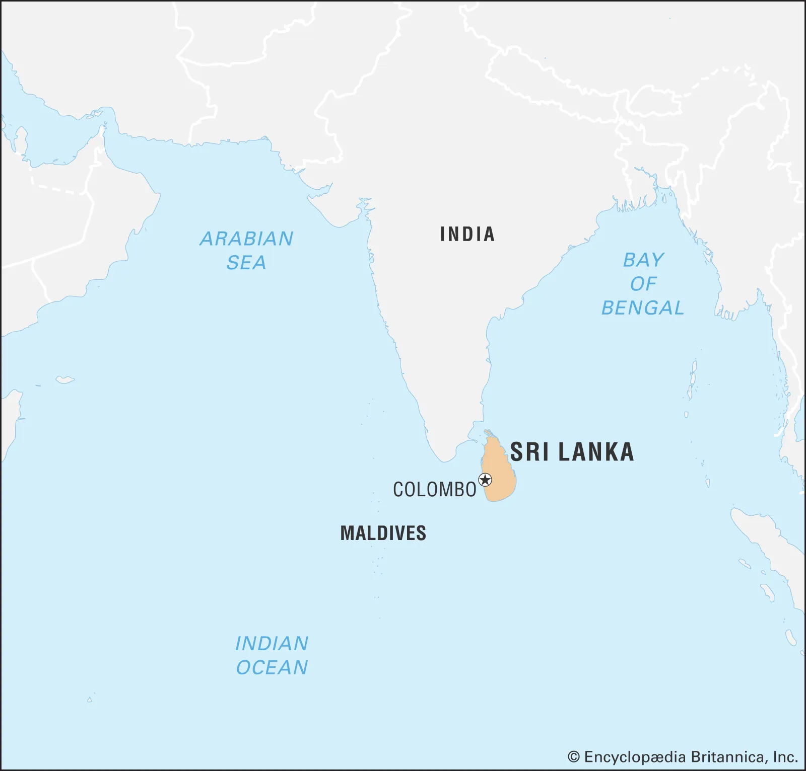
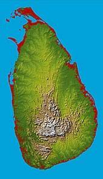
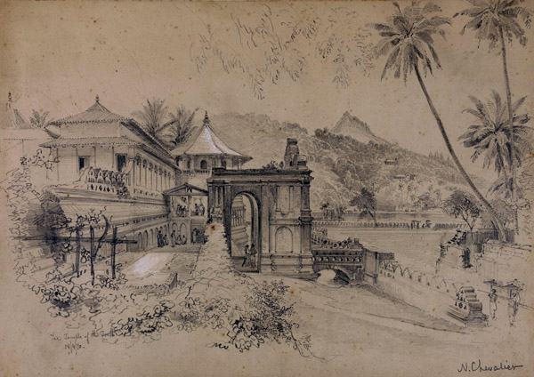
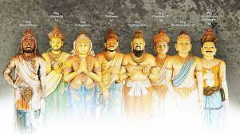
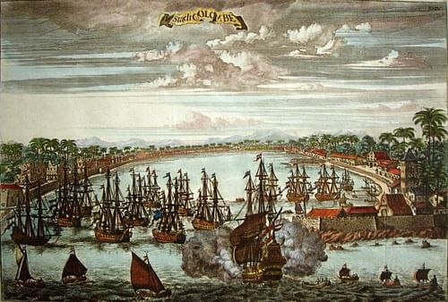
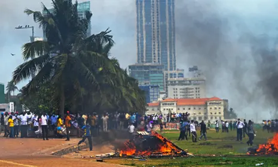

<source src="mov_bbb.mp4" type="video/mp4"><source src="mov_bbb.mp4" type="video/mp4"><html>
<head>
<h1><center>SriLanka</center></h1>
</head>

<body>

<body style="background-color:lightyellow;">


<center><center>

<p>Sri Lanka is an island nation located in the Indian Ocean, just off the southeastern coast of India. Despite its modest size—slightly larger than the state of West Virginia—Sri Lanka has a population of about 20 million people, almost equal to the population of Texas. The island is rich in natural resources, and has a diverse economy based on agriculture, mining, fishing, manufacturing, and tourism. On becoming an independent nation in 1948 Sri Lanka (formerly called Ceylon) seemed to be headed for a future as a stable and prosperous democracy. Since the 1970s, however, the country has been torn by violent struggles between the two main ethnic groups, Sinhalese and Tamils, that make up its population. Sri Lanka suffered severe damage and loss of life from the tsunami of 2004; what effect that disaster will have on the country’s political future remains to be seen.</p>

<h2>Geography</h2>

<p>Shaped like a teardrop, the island of Sri Lanka measures about 255 miles (415 km.) from north to south, and about 135 miles (220 km.) from east to west, with a total land area of about 25,300 square miles (65,600 square km.). It has more than 830 miles (1340 km.) of coastline. The island is ringed by a broad coastal plain, rising to an inland terrain of gently rolling hills. A range of mountains dominates the south-central interior, with the highest peak, Mt. Piduruthalagala, reaching more than 8200 feet (2524 meters) in height.</p><br>


<p>Located between 5 and 10 degrees latitude north of the equator, Sri Lanka has a tropical climate dominated by two monsoon seasons. The summer monsoon lasts from mid-May to October, when winds from the southwest bring rain from the Indian Ocean to the southern and western parts of the island. During the winter monsoon, from December through March, winds from the northeast bring rain from the Bay of Bengal to northern and eastern regions. Monsoon rains are constant and heavy, with up to 100 inches of rain per month falling during the summer monsoon in the southwest. October-November and mid-March to mid-May are intermonsoon seasons, with less rainfall. The climate is hot and humid for much of the year, but is cooler in the highlands.</p>

<h2>Histroy</h2>


<p>The Ancient Period About 2600 years ago, migrants from northern India, the ancestors of today’s Sinhalese people, arrived in Sri Lanka. The Sinhalese were among the earliest people outside northern India to adopt the Buddhist religion, which they did around 300 B.C.E. The Buddhist kingdoms of Sri Lanka were related by language and culture to the classic states of northern India, such as the Maurya (324-187 B.C.E.) and Gupta (c. 320-c.550 C.E.) empires, and were in contact with them through diplomacy and trade.</p>
<br>

<p>The Sri Lankan Buddhist kingdoms flourished by building and controlling irrigation networks on the plains in the northern part of the island. One ancient capital, Anuradhapura, was home to some of the largest and most impressive Buddhist temples of southern Asia. The ruler of another Sri Lankan state, King Kasyapa (r. 473-491) made his capital at Sigiriya, a natural rock fortress rising a sheer 500 feet above the surrounding plain, on top of which the king built an elegant city of palaces and gardens.</p>

<p>King Kysapa and other Sri Lankan kings had to deal with occasional invasions from Tamil Nadu, in southern India, which increased in frequency and severity after around 600 C.E. Sri Lanka struggled, not always successfully, to remain independent of the great Chola Empire that dominated southern India from about 850 to 1279 C.E. A Tamil kingdom was established on the Jaffa Peninsula, in the northern part of Sri Lanka, by the early 13 th century. Meanwhile the center of Sinhalese royal power drifted steadily toward the southern and western parts of the island, and the separate Sinhalese kingdom of Kandy rose to power in the central hills. The division of Sri Lanka into a Tamil north and east, and a Sinhalese south, center and west, is thus not a new phenomenon of the 20th century, but a situation that has existed for hundreds of years.</p>

<h2>Trade and the Colonial Era</h2>



<p>Long-distance ocean trade in the Indian Ocean region has existed since ancient times. The Roman Empire imported luxury goods from Sri Lanka, including gemstones and cinnamon. Sri Lankan ships sailed as far west as Arabia, and as far east as China. Arab and Persian merchants knew Sri Lanka as the island of Serendib (a word that gives us “serendipity,” meaning “something which comes as a pleasant surprise”). “Treasure ships” sent by the emperor of Ming Dynasty China visited Sri Lanka during the 15th century.</p>
<br><p>Sri Lanka began to feel the impact of Europe soon after Portuguese ships found their way to the Indian Ocean at the end of the 15th century. Because Sri Lanka was rich in goods that Europeans wanted, and also because it is a convenient place to stop on the way from Europe to Indonesia and China, Europeans competed to control the island and its trade. The Portuguese conquered Sri Lanka’s coastal cities in the 16 th century but faced fierce competition from the Dutch for control of the island. By 1707 the Dutch had captured the last of the Portuguese forts along the coast and became the main European power in Sri Lanka, but they in turn lost out to the British in 1795-96. By 1818 the British had also defeated the independent inland Kingdom of Kandy, and the whole island of Sri Lanka became part of the British Empire.</p>
<br><p>Under British colonial rule, the economy of Sri Lanka was transformed to become a producer of agricultural products for foreign trade. Soon the economy was dominated by plantation crops such as coffee, tea, rubber, and coconuts. The British authorities also encouraged the migration of Tamil laborers from southern India to Sri Lanka to work on the plantations. Colonial rule created new elite groups, including plantation managers, intellectuals who took advantage of the opportunity to gain a western-style education, and bureaucrats who worked for the colonial government. But ethnic problems continued to complicate Sri Lankan national life.</p>

<h2>Independence</h2>

<p>All over South Asia (including today’s countries of India, Sri Lanka, Myanmar, Pakistan, and Bangladesh), resistence to British rule grew rapidly after the end of World War I in 1919. In Sri Lanka, which was comparatively small, stable, and well governed under British rule, the country’s first democratic election was held in 1931. A movement toward economic self-determination leading to full independence was spearheaded by Sri Lanka’s greatest modern leader, Don Stephen Senanayake (1884-1952). When Sri Lanka became independent on February 4, 1948, Senanayake became the country’s first prime minister. He committed his government to the principles of a free, democratic, and multi-ethnic Sri Lanka. However, long-standing problems between the Sinhalese and Tamil communities made it difficult to create a truly multi-ethnic society. Many Sinhalese resented the Tamils as “newcomers” who took jobs and political power away from them (although the ancestors of some Tamils had lived in Sri Lanka for centuries). Many Tamils feared that their rights would be ignored by the Sinhalese majority</p>

<h2>Modern Sri Lanka: Problems and Promise</h2>


<p>Sri Lanka’s path as a modern, independent nation has been marred by almost continual political violence. Governments have faced popular pressure from the Sinhalese majority not to make concessions to the Tamil minority; Tamils have agitated for more autonomy. An agreement in 1957 recognizing Tamil as a national language and calling for the creation of a semi-autonomous Tamil state in the northeast was never fully implemented. Since 1972 the armed uprising of the Liberation Tigers of Tamil Eelam (“Tamil Tigers”) has been met with government military force, leading to outright civil war. Hundreds of political leaders, including Prime Minister W. R. D. Bandaranaike in 1959 and President Ranasinghe Pemadasa in 1993, have been assassinated by extremists from both communities. Despite cease-fires, negotiations, and peace-making efforts by India, Norway, and Thailand, by the early 21 st century the civil war had been responsible for at least 60,000 deaths. Foreign investment in manufacturing and tourism has stagnated in part because of fears of violence, with negative effects on national economic growth.</p>
<br>

<p>Renewed peace talks in 2002-04 have led to a reduction in the level of violence, and new hopes for a long-term settlement. Sri Lanka has a large, well-educated population, great economic potential, and a long tradition of democracy. It is poised for a great future if it can solve its key problem of Sinhalese-Tamil conflict. Many observers hope that a national effort towards recovery from the tsunami of 2004 will be a step in the right direction.</p>


<a href="https://asiasociety.org/education/sri-lanka">source of information</a>

<h3>Created By Manuja Bimsara Ranketh Kumbura

<h1>Thank You</h1>

<source src="mov_12.mp3" type="video/mp3">

</html>